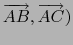

suivant: Les propriétés
monter: Les mesures
précédent: Le carré de la
Table des matières
Index
La mesure d'un angle : angle
Voir aussi : 9.16.9 pour la géométrie plane.
angle a comme argument trois points ou deux droites coplanaires
ou une droite et un plan.
angle renvoie la mesure en radians (ou en degrés) soit de
l'angle non orienté de sommet le premier argument, le deuxième argument se
trouve sur le premier coté de l'angle et le troisième argument se
trouve sur le deuxiéme coté soit de l'angle des deux droites coplanaires
soit de l'angle de la droite et du plan.
Ainsi angle(A,B,C) désigne la mesure de l'angle en radians (ou en
degrés) de
(.
On tape :
angle((point(0,0,0),point(1,0,0),point(0,0,1)))
On obtient si on a coché radian dans la configuration du cas
(bouton donnant la ligne d'état) :
pi/4
On tape :
angle(droite([0,0,0],[1,1,0]),droite([0,0,0],[1,1,1]))
On obtient si on a coché radian dans la configuration du cas
(bouton donnant la ligne d'état) :
acos(2/(sqrt(6)))
On tape :
angle(droite([0,0,0],[1,1,0]),plan(x+y+z=0))
On obtient si on a coché radian dans la configuration du cas
(bouton donnant la ligne d'état) :
acos(2/(sqrt(6)))
suivant: Les propriétés
monter: Les mesures
précédent: Le carré de la
Table des matières
Index
Documentation de giac écrite par Renée De Graeve